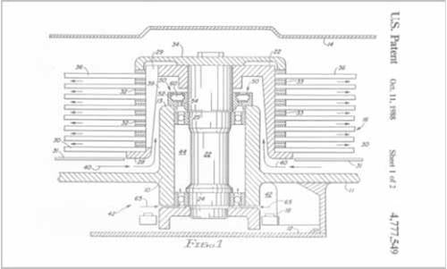

![IM]()
DIBUJO MECÁNICO E INDUSTRIAL (1209)
Objetivo(s) del curso:
El alumno elaborará e interpretará planos dentro de las ramas de la ingeniería, a fin de poder establecer una comunicación eficaz durante el ejercicio profesional.
1. Introducción al dibujo.
1.1 Definición de dibujo.
DIBUJO
Un Dibujo se define como un conjunto de imágenes y especificaciones gráficas detalladas diseñadas para representar objetos físicos o procesos. Su objetivo principal es permitir la recreación precisa de esos objetos o procesos a partir de la información proporcionada.
Un dibujo es una representación gráfica de un objeto real. Por lo tanto, el dibujo, es un lenguaje gráfico en virtud de que a vale de imágenes para, comunicar pensamientos e ideas. Como estas imágenes las entiende gente de distintas naciones, el dibujo recibe el nombre de Lenguaje Universal.

1.2 Clasificación de dibujos.
Clasificación
Los dibujos se pueden clasificar en varias categorías, destacando:
Dibujos axonométricos: Representan las tres dimensiones de un objeto con factores de escala constantes para cada dirección. Incluyen:
· Dibujos isométricos: Escala uniforme en los tres ejes.
· Dibujos dimétricos: Escala uniforme en dos de los ejes.
· Dibujos trimétricos: Diferentes factores de escala para los tres ejes.
Dibujos oblicuos: Muestran una cara del objeto en el plano del papel, con las dimensiones de profundidad en ángulos específicos:
· Oblicuo caballero: La profundidad se mide en escala completa.
· Oblicuo gabinete: La profundidad se mide a la mitad de su escala.
Dibujos en perspectiva: Representan objetos con líneas que convergen hacia puntos de fuga, generando una apariencia tridimensional más realista.
Dibujos en detalle: Se enfocan en la geometría, dimensiones, tolerancias y materiales de una parte específica
2. Análisis geométrico.
2.1 Concepto de lugar geométrico.
Un lugar geométrico se define como un conjunto de puntos que cumplen una o más condiciones geométricas específicas. Por ejemplo, un círculo es un lugar geométrico que incluye todos los puntos equidistantes de un punto central.
2.2 Definición de lugares geométricos básicos.
Los lugares geométricos básicos incluyen formas como:
- Línea recta: Lugar geométrico de todos los puntos alineados en una dirección fija.
- Círculo: Lugar geométrico donde todos los puntos están equidistantes de un punto fijo llamado centro.
- Parábola: Conjunto de puntos equidistantes de un punto fijo (foco) y una línea recta (directriz).
- Elipse: Lugar geométrico cuyos puntos mantienen constante la suma de sus distancias a dos focos fijos.
2.3 Análisis tridimensional.
El análisis tridimensional en el dibujo implica representar y estudiar objetos en tres dimensiones utilizando sistemas de coordenadas tridimensionales (x, y, z). Este enfoque permite interpretar volúmenes y geometrías complejas en espacios tridimensionales.
2.4 Elementos geométricos en el espacio.
Los elementos geométricos en el espacio incluyen:
- Puntos: Posiciones específicas sin dimensión.
- Líneas: Extensiones unidimensionales que conectan dos puntos.
- Planos: Superficies bidimensionales infinitas.
- Sólidos: Volúmenes tridimensionales encerrados por superficies.
2.5 Concepto de proyección.
La proyección es el proceso de transformar un objeto tridimensional en una representación bidimensional mediante líneas que conectan puntos del objeto con un plano de observación.
2.6 Clasificación de proyecciones.
Las proyecciones pueden clasificarse en:
- Proyecciones ortogonales: Proyecciones perpendiculares al plano de observación.
- Proyecciones oblicuas: Proyecciones en ángulos distintos a 90° respecto al plano de observación.
- Proyecciones en perspectiva: Proyecciones que convergen hacia uno o más puntos de fuga para simular la profundidad.
2.7 Sistemas de proyecciones ortogonales.
Los sistemas de proyecciones ortogonales incluyen:
- Proyección del primer ángulo: El objeto se sitúa entre el observador y el plano de proyección.
- Proyección del tercer ángulo: El plano de proyección se sitúa entre el objeto y el observador, siendo este el sistema más común en América.
2.8 Consolidar las habilidades utilizando la herramienta computacional.
El uso de software CAD (Diseño Asistido por Computadora) fortalece las habilidades de representación gráfica, permitiendo crear, analizar y modificar modelos tridimensionales con mayor precisión y eficiencia. Estas herramientas también facilitan el cálculo de propiedades geométricas y el análisis de diseño.
3. Norma de dibujo técnico.
3.1 Introducción.
La norma de dibujo técnico establece las bases y reglas que permiten la comunicación clara y precisa entre los diferentes actores de un proyecto. Estas normas aseguran la uniformidad en la interpretación y creación de dibujos técnicos.
3.2 Clasificación de los dibujos.
Los dibujos técnicos se clasifican según su propósito y detalle en:
- Dibujos de conjunto: Representan la disposición y relación entre diferentes partes.
- Dibujos de detalle: Describen una única pieza con todas sus dimensiones, materiales y especificaciones
3.3 Formatos.
Los formatos de los dibujos técnicos están regulados por normas internacionales como la ISO y ANSI. Estas normas definen tamaños de papel estándar, márgenes y la disposición de cuadros de título.
3.4 Vistas.
Las vistas son representaciones bidimensionales de un objeto tridimensional. Incluyen:
- Vista frontal: La principal.
- Vista superior y lateral: Complementan la frontal.
- Vistas múltiples y auxiliares: Para detalles específicos o inclinaciones no visibles en las vistas principales.
3.5 Vistas auxiliares.
Se utilizan para representar superficies inclinadas u oblicuas que no se observan claramente en las vistas principales. Estas permiten identificar relaciones geométricas como ángulos, pendientes o distancias.
3.6 Acotaciones (sistemas usuales).
Las acotaciones comunican dimensiones en un dibujo técnico. Se aplican siguiendo normas como la ASME Y14.5 para garantizar precisión. Existen varios sistemas:
- Cadena: Dimensiones consecutivas.
- Base común: Todas las dimensiones parten de un mismo punto.
3.7 Tolerancias dimensionales, geométricas y ajustes.
Las tolerancias especifican límites aceptables de variación en dimensiones y geometría. Estas se dividen en:
- Dimensionales: Controlan variaciones en tamaño.
- Geométricas: Aseguran precisión en forma y posición.
- Ajustes: Describen cómo interactúan componentes ensamblados.
3.8 Representación de acabados.
Los acabados superficiales se indican mediante símbolos que especifican rugosidad, procesos de manufactura y tratamientos adicionales.
3.9 Acotación funcional.
La acotación funcional prioriza las dimensiones críticas para el correcto funcionamiento de una pieza o ensamblaje. Esto permite evitar errores y garantizar la intercambiabilidad.
3.10 Aplicación de la herramienta computacional.
El uso de software CAD (Diseño Asistido por Computadora) optimiza la creación, modificación y análisis de dibujos técnicos. Herramientas como SolidWorks o AutoCAD agilizan la aplicación de normas, acotaciones y tolerancias.
4. Dibujo en el proyecto.
4.1 Medidas de elementos comerciales.
Los elementos comerciales incluyen componentes estándar como tornillos, tuercas y rodamientos. Las dimensiones de estos elementos suelen estar normalizadas para garantizar compatibilidad e intercambiabilidad entre diferentes fabricantes. Las especificaciones pueden incluir longitudes, diámetros y tolerancias, disponibles en catálogos técnicos.
4.2 Dibujo de elementos mecánicos simples.
Los elementos mecánicos simples incluyen engranajes, poleas y ejes. Los dibujos representan la geometría básica, dimensiones, y especificaciones de materiales, mostrando su funcionalidad en un sistema más grande.
4.3 Representación de uniones y ensambles.
Las uniones y ensambles se ilustran mediante diagramas que muestran cómo las piezas individuales se conectan. Estas representaciones incluyen detalles como:
- Posición relativa de las partes.
- Métodos de unión: soldadura, pernos, chavetas, entre otros.
- Tolerancias y ajustes necesarios para el ensamblaje.
4.4 Dibujos de conjunto en el diseño mecánico.
Estos dibujos describen sistemas completos y su estructura. Incluyen vistas detalladas de todas las partes y su disposición en el ensamblaje, asegurando que se comprenda el funcionamiento integral del diseño.
4.5 Dibujo en los procesos de manufactura.
El dibujo técnico en manufactura detalla cómo se fabrican las piezas. Esto incluye:
- Proceso de corte y conformado.
- Simbología para acabados superficiales.
- Indicaciones de tolerancias y materiales.
4.6 Dibujo en las instalaciones y su representación.
Para instalaciones como sistemas eléctricos o mecánicos, los dibujos incluyen:
- Diagramas esquemáticos.
- Planos de distribución.
- Detalles constructivos para garantizar la instalación correcta.
4.7 Aplicación de la herramienta computacional.
El software CAD permite modelar y analizar elementos mecánicos y sistemas completos, optimizando la precisión y reduciendo los errores en los planos técnicos. Se emplea para:
- Creación de modelos tridimensionales.
- Generación automática de vistas y cortes.
- Aplicación de tolerancias y ajustes en diseños
5. Proyecto de dibujo.
5.1 Elaboración de planos de un proyecto de ingeniería.
La elaboración de planos para un proyecto de ingeniería implica una serie de pasos clave para garantizar que el diseño cumpla con los requisitos técnicos y sea comprensible para su implementación. Incluye:
- Creación del plano del emplazamiento: Este es uno de los primeros dibujos que se realizan y proporciona una representación en planta del área donde se desarrollará el proyecto. Incluye detalles topográficos, estructuras existentes, carreteras y elementos relevantes para el diseño.
- Vistas en planta y detalles de construcción: Se generan vistas detalladas de los diferentes pisos, instalaciones eléctricas, y sistemas mecánicos y de plomería. Estos planos se organizan según el orden de construcción para facilitar su interpretación y ejecución.
- Documentación formal y legal: Los planos incluyen un cuadro de título, especificaciones y los sellos de un ingeniero profesional titulado, quien es legalmente responsable del diseño y ejecución del proyecto. Esto asegura que los planos sean documentos oficiales para construcción.
- Incorporación de software CAD: Las herramientas computacionales se emplean para generar modelos tridimensionales, vistas múltiples, cortes y secciones. Esto agiliza el diseño y permite realizar modificaciones de manera precisa y eficiente durante las fases del proyecto.
6. Bibliografía.
LIEU & SORBY, - Dibujo para diseño de ingeniería.